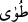
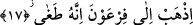
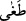

kelimesinin amel etmesine itibar etmemiştir hadîs kelimesini haber anlamında isim
olarak almıştır. Kısaca ifâde etmek gerekirse böyle bir ihtimal yok da değildir. En uygun
olanı ise “Mûsâ” kelimesi üzerinde vakfetmektir. Nitekim bazı tefsirler buna işâret
etmektedirler.
Âyetteki “el-vâdi’l-mukaddes” ifâdesinin anlamı; Allah’ın Hz. Mûsâ ile konuşurken
lâyık olmayan şeylerden temizlemesiyle temiz hale gelmiş mübarek vâdi; demektir.
Dolayısıyla o vâdînin mukaddes olması, temiz olması demektir. Veya oraya mukaddes
denmesi, onun şirkten ve benzeri pis şeylerden temiz, kutsal toprakların sınırı içinde
kalmasından dolayıdır. Vâdî kelimesinin asıl anlamı, “içerisinde su akan yer” demektir.
İki dağ arasındaki açıklığa vâdî denmesi de bundan dolayıdır. Kelimenin çoğulu; evdiye
şeklindedir. Bu kelime ile -istiâre yoluyla- üslûp ve ekol gibi “gidiş yolu” anlamı da
ifâde olunabilir. Sözgelimi “filanca senin bulunduğun vâdîden başka bir vâdîdedir”
dediğimizde bununla “yol, gidiş tarzı, metod” kasdedilmiş olmaktadır.
“
/Tuvâ” kelimesi tenvinli okunduğunda “mekan” anlamına; tenvinsiz okunduğunda
“yeryüzü parçası” anlamına kullanılır. Ferrâ’nın ifâdesine göre bu kelimenin tenvinli
olarak okunması daha uygundur. Çünkü tenvinsiz okunduğunda ma’dûl sebebi ile gayr-i
munsarıftır denecektir. Oysa vâdî isimlerinden Tuva’dan başka ma’dul olan bir isim
yoktur.
Tuva Medine ile Mısır arasında bir vâdinin adıdır. Buna göre Tuvâ kelimesi daha
önce geçen vâdi kelimesinin atf-ı beyânı olur.
Kâşâni vâdi ve Tuvâ kelimelerinden başka anlamlar çıkarmaktadır. Ona göre “kutsal
vâdi”, maddelere bağlanmaktan uzak olduğu için “mücerred ruh alemidir” ve bu alemin
adı Tuva’dır. Çünkü bütün mevcudat (varlıklar) cisimlerinden ve ruhlarından sıyrılıp
onun altında, onun içinde ve onun kahrı altında dürülmüşlerdir. Bu âlem sıfatlar
âlemidir ve bu makam onun tecelliyatından söz etme makamıdır. Bundan dolayı Allah bu
vadide onunla konuşmuştur. Bu Tuva âleminin sonu, Peygamber Efendimiz’in Cebrâil’i
kendi yaratıldığı sûretinde görmüş olduğu “el-Ufuku’l-A’la/En Ufuk”tur.
17. “Fir’avn’a git! Çünkü o çok azdı.”
“Fir’avn’a git!” Bu cümlenin başında “dedi” fiili vardır. Bunu takdir ederek cümleyi
yeniden kurmak gerekirse, Allah Mûsâ’ya dedi ki: Fir’avn’a git. “Çünkü o çok azdı.”
Bu son cümle, yukardaki emrin sebebini bildirmektedir. Veya bu cümle, Allah Teâlâ’nın
emrine sarılmanın vâcipliğini ifâde etmek için getirilmiştir. “
/Tağâ/azdı” fiilinin
masdarı olan “tuğyan” kelimesi “haddi aşmak” demektir. Bir başka ifâdeyle Allah’ı
inkâr ile hakka karşı azmak; insanlara böbürlenip onları köle edinerek halka karşı
azmak demektir. Kulluğun kemali nasıl ki hakka sadakat ve halka güzel muamele ile